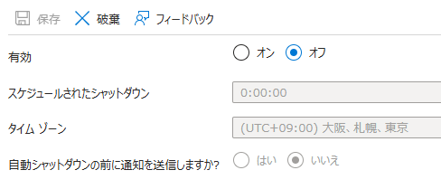

az resource show --ids /subscriptions/{SubscriptionId}/resourceGroups/{ResourceGroupName}/providers/microsoft.devtestlab/schedules/shutdown-computevm-{VMName}
出力例（自動シャットダウン リソースが存在しない場合）： 自動シャットダウン リソースが存在しない場合、Azure Portal では下図のように表示されますが、コマンドの返答結果から Not Found エラーが返却されます。 
1 2 3 4 5 6
{ "error":{ "code":"ResourceNotFound", "message":"The Resource 'microsoft.devtestlab/schedules/shutdown-computevm-{VMName}' under resource group '{ResourceGroupName}' was not found." } }
az resource update --ids "/subscriptions/{SubscriptionId}/resourceGroups/{ResourceGroupName}/providers/microsoft.devtestlab/schedules/shutdown-computevm-{VMName}" --set properties.timeZoneID="Tokyo Standard Time"
status : Enabled taskType : ComputeVmShutdownTask dailyRecurrence : @{time=1730} timeZoneId : Tokyo Standard Time notificationSettings : @{status=Enabled; timeInMinutes=30; webhookUrl=https://example.com/; emailRecipient=foo@bar.com; notificationLocale=ja} createdDate : 2026/01/19 6:23:41 targetResourceId : /subscriptions/{SubscriptionId}/resourceGroups/{ResourceGroupName}/providers/Microsof t.Compute/virtualMachines/{VMName} provisioningState : Succeeded uniqueIdentifier : xxx
出力例（自動シャットダウン リソースが存在しているが設定がオフの場合）：
1 2 3 4 5 6 7 8 9 10 11
status : Disabled taskType : ComputeVmShutdownTask dailyRecurrence : @{time=1730} timeZoneId : Tokyo Standard Time notificationSettings : @{status=Enabled; timeInMinutes=30; webhookUrl=https://example.com/; emailRecipient=foo@bar.com; notificationLocale=ja} createdDate : 2026/01/19 6:54:45 targetResourceId : /subscriptions/{SubscriptionId}/resourceGroups/{ResourceGroupName}/providers/Microsof t.Compute/virtualMachines/{VMName} provisioningState : Succeeded uniqueIdentifier : xxx
出力例（自動シャットダウン リソースが存在しない場合）：
1 2 3 4
Get-AzResource: The Resource 'microsoft.devtestlab/schedules/shutdown-computevm-{VMName}' under resource group '{VMName}' was not found. For more details please go to https://aka.ms/ARMResourceNotFoundFix StatusCode: 404 ReasonPhrase: Not Found OperationID : xxx
出力例： -Force パラメーターの指定がない場合、リソースの更新可否について選択する必要があるため、更新してもよければそのまま Enter キーまたは Y キーを押下してリソースを更新します。
1 2 3 4 5 6 7 8 9 10 11 12 13 14 15 16 17 18
Confirm Are you sure you want to update the following resource: /subscriptions/{SubscriptionId}/resourceGroups/{ResourceGroupName}/providers/microsoft.devtestlab/schedules/ shutdown-computevm-{VMName} [Y] Yes [N] No [S] Suspend [?] Help (default is "Y"):
出力例： -Force パラメーターの指定がない場合、リソースの削除可否について選択する必要があるため、削除してもよければそのまま Enter キーまたは Y キーを押下してリソースを削除します。
1 2 3 4 5
Confirm Are you sure you want to delete the following resource: /subscriptions/{SubscriptionId}/resourceGroups/{ResourceGroupName}/providers/microsoft.devtestlab/schedules/shutdown-computevm-{VMName} [Y] Yes [N] No [S] Suspend [?] Help (default is "Y"): True
GET https://management.azure.com/subscriptions/{subscriptionId}/resourceGroups/{resourceGroupName}/providers/Microsoft.DevTestLab/schedules/shutdown-computevm-{VMName}?api-version=2018-09-15
コマンド実行例
curl や PowerShell の Invoke-RestMethod コマンドレットなどにおいても REST API の実行は可能ですが、Azure CLI コマンドである az rest を用いて REST API を実行することで、az login によりログインした資格情報を使用して自動的に認証を行うので、簡単に REST API を実行できます。
1
az rest --method get --url "https://management.azure.com/subscriptions/{subscriptionId}/resourceGroups/{resourceGroupName}/providers/Microsoft.DevTestLab/schedules/shutdown-computevm-{VMName}?api-version=2018-09-15"
Not Found({"error":{"code":"ResourceNotFound","message":"The Resource 'Microsoft.DevTestLab/schedules/shutdown-computevm-{VMName}' under resource group '{resourceGroupName}' was not found. For more details please go to https://aka.ms/ARMResourceNotFoundFix"}})
PUT https://management.azure.com/subscriptions/{subscriptionId}/resourceGroups/{resourceGroupName}/providers/Microsoft.DevTestLab/schedules/{VMName}?api-version=2018-09-15
# body を組み立てる $body = "{'location':'japaneast','properties':{'status':'Enabled','taskType':'ComputeVmShutdownTask','timeZoneId':'Tokyo Standard Time','targetResourceId':'/subscriptions{subscriptionId}/resourceGroups/{resourceGroupName}/providers/Microsoft.Compute/virtualMachines/{VMName}','dailyRecurrence':{'time':'1730'},'notificationSettings':{'status':'Enabled','emailRecipient':'foo@bar.com','timeInMinutes':30,'webhookUrl':'https://example.com/','notificationLocale':'ja'}}}"
# Invoke request $result = az rest ` --method put ` --url "https://management.azure.com/subscriptions/{subscriptionId}/resourceGroups/{resourceGroupName}/providers/Microsoft.DevTestLab/schedules/shutdown-computevm-{VMName}?api-version=2018-09-15" ` --body $body